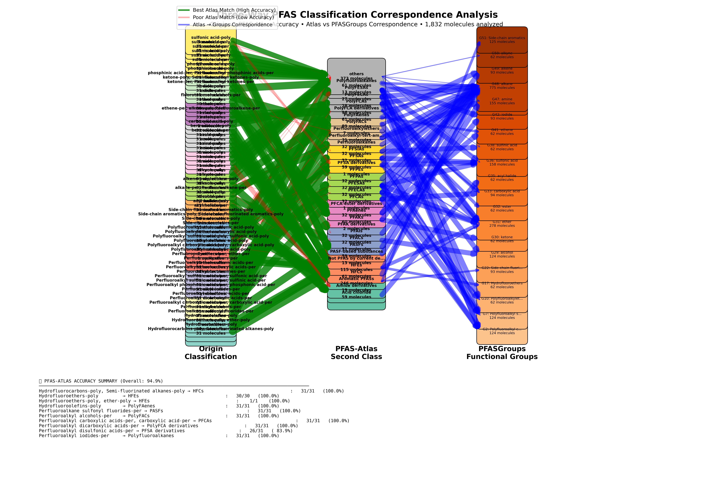
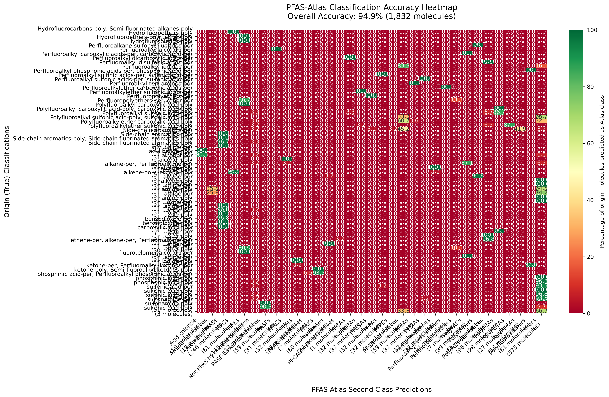

This analysis evaluates the accuracy of PFAS-Atlas classifications against origin (ground truth) classifications and examines correspondence with PFASGroups functional group detections across 1,832 molecules.
| Origin Category | Best Atlas Match | Correct/Total | Accuracy | Assessment |
|---|---|---|---|---|
| Hydrofluorocarbons-poly, Semi-fluorinated alkanes-poly | HFCs | 31/31 | 100.0% | Excellent |
| Hydrofluoroethers-poly | HFEs | 30/30 | 100.0% | Excellent |
| Hydrofluoroethers-poly, ether-poly | HFEs | 1/1 | 100.0% | Excellent |
| Hydrofluoroolefins-poly | PolyFAenes | 31/31 | 100.0% | Excellent |
| Perfluoroalkane sulfonyl fluorides-per | PASFs | 31/31 | 100.0% | Excellent |
| Perfluoroalkyl alcohols-per | PolyFACs | 31/31 | 100.0% | Excellent |
| Perfluoroalkyl carboxylic acids-per, carboxylic acid-per | PFCAs | 31/31 | 100.0% | Excellent |
| Perfluoroalkyl dicarboxylic acids-per | PolyFCA derivatives | 31/31 | 100.0% | Excellent |
| Perfluoroalkyl iodides-per | Polyfluoroalkanes | 31/31 | 100.0% | Excellent |
| Perfluoroalkyl phosphonic acids-per, phosphonic acid-per | PFPAs | 31/31 | 100.0% | Excellent |
| Perfluoroalkyl sulfinic acids-per, sulfinic acid-per | PFSIAs | 31/31 | 100.0% | Excellent |
| Perfluoroalkyl sulfonic acids-per, sulfonic acid-per | PFSAs | 31/31 | 100.0% | Excellent |
| Perfluoroalkyl-tert-amines-per | Perfluoroalkyl-tert-amines | 31/31 | 100.0% | Excellent |
| Perfluoroalkylether carboxylic acids-per | PFECAs | 31/31 | 100.0% | Excellent |
| Perfluoroalkylether sulfonic acids-per | PFESAs | 31/31 | 100.0% | Excellent |
| Perfluoropolyethers-per, ether-per | HFEs | 1/1 | 100.0% | Excellent |
| Polyfluoroalkyl carboxylic acid-poly | PolyFCAs | 1/1 | 100.0% | Excellent |
| Side-chain aromatics-per | Aromatic PFASs | 31/31 | 100.0% | Excellent |
| Side-chain aromatics-poly | Aromatic PFASs | 1/1 | 100.0% | Excellent |
| Side-chain fluorinated aromatics-poly | Aromatic PFASs | 1/1 | 100.0% | Excellent |
| acyl halide-per | Acid chloride | 31/31 | 100.0% | Excellent |
| alcohol-per | PFACs | 31/31 | 100.0% | Excellent |
| alkane-per, Perfluoroalkane-per | Perfluoroalkanes | 31/31 | 100.0% | Excellent |
| alkyne-per | others | 31/31 | 100.0% | Excellent |
| alkyne-poly | others | 31/31 | 100.0% | Excellent |
| amine-per | others | 31/31 | 100.0% | Excellent |
| amine-poly | others | 31/31 | 100.0% | Excellent |
| azine-per | Aromatic PFASs | 31/31 | 100.0% | Excellent |
| azole-per | Aromatic PFASs | 31/31 | 100.0% | Excellent |
| benzodioxole-per | Aromatic PFASs | 31/31 | 100.0% | Excellent |
| benzodioxole-poly | Aromatic PFASs | 31/31 | 100.0% | Excellent |
| carboxylic acid-poly | PolyFCAs | 1/1 | 100.0% | Excellent |
| ester-per | PolyFCA derivatives | 31/31 | 100.0% | Excellent |
| ethene-per, alkene-per, Perfluoroalkene-per | PFAenes | 31/31 | 100.0% | Excellent |
| ether-poly | HFEs | 30/30 | 100.0% | Excellent |
| fluorotelomer alcohols-per | PolyFACs | 31/31 | 100.0% | Excellent |
| iodide-per | PFAIs | 31/31 | 100.0% | Excellent |
| ketone-per, Perfluoroalkyl ketones-per | PFAKs | 31/31 | 100.0% | Excellent |
| phosphinic acid-per, Perfluoroalkyl phosphinic acids-per | others | 31/31 | 100.0% | Excellent |
| sulfenic acid-per | others | 31/31 | 100.0% | Excellent |
| sulfonamide-per | PASF-based substances | 31/31 | 100.0% | Excellent |
| alkane-poly | HFCs | 30/31 | 96.8% | Excellent |
| alkene-poly, ethene-poly | PolyFAenes | 30/31 | 96.8% | Excellent |
| azine-poly | Aromatic PFASs | 30/31 | 96.8% | Excellent |
| azole-poly | Aromatic PFASs | 30/31 | 96.8% | Excellent |
| ester-poly | PolyFCA derivatives | 30/31 | 96.8% | Excellent |
| iodide-poly | Polyfluoroalkanes | 30/31 | 96.8% | Excellent |
| phosphinic acid-poly | others | 30/31 | 96.8% | Excellent |
| sulfenic acid-poly | others | 30/31 | 96.8% | Excellent |
| Side-chain aromatics-poly, Side-chain fluorinated aromatics-poly | Aromatic PFASs | 29/30 | 96.7% | Excellent |
| ketone-poly, Semi-fluoroalkyl ketones-poly | PFAKs | 29/31 | 93.5% | Excellent |
| phosphonic acid-poly | others | 29/31 | 93.5% | Excellent |
| sulfinic acid-poly | others | 29/31 | 93.5% | Excellent |
| acyl halide-poly | Acid chloride | 28/31 | 90.3% | Excellent |
| sulfonamide-poly | PASF-based substances | 28/31 | 90.3% | Excellent |
| ether-per | HFEs | 27/30 | 90.0% | Excellent |
| Polyfluoroalkylether carboxylic acid-poly | PolyFECAs | 27/31 | 87.1% | Good |
| alcohol-poly | PolyFACs | 27/31 | 87.1% | Good |
| Perfluoropolyethers-per | HFEs | 26/30 | 86.7% | Good |
| Polyfluoroalkyl carboxylic acid-poly, carboxylic acid-poly | PolyFCAs | 26/30 | 86.7% | Good |
| Perfluoroalkyl disulfonic acids-per | PFSA derivatives | 26/31 | 83.9% | Good |
| amide-poly | others | 23/31 | 74.2% | Good |
| Polyfluoroalkyl sulfonic acid-poly | others | 2/3 | 66.7% | Poor |
| sulfonic acid-poly | others | 2/3 | 66.7% | Poor |
| amide-per | others | 20/31 | 64.5% | Poor |
| Polyfluoroalkyl sulfonic acid-poly, sulfonic acid-poly | PFSA derivatives | 17/28 | 60.7% | Poor |
| Polyfluoroalkylether sulfonic acid-poly | PFSA derivatives | 14/31 | 45.2% | Poor |


Analysis generated on 2025-12-13 using PFASGroups benchmark suite